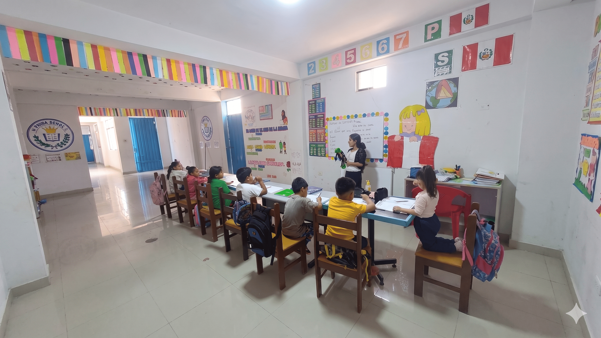
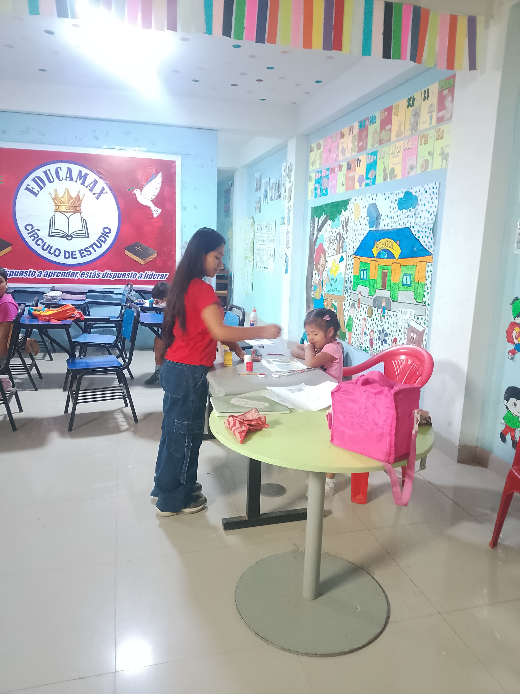

- INSTITUTO DE REFORZAMIENTO · CARABAYLLO
Hoy refuerzas,
mañana destacas.
Acompañamiento personalizado para primaria, secundaria y preuniversitario. Docentes con experiencia y seguimiento real. Cero plataformas innecesarias.
Inscríbete Ahora
Quiénes somos

Desde 2022 ayudamos a estudiantes en Carabayllo a mejorar su rendimiento académico con un acompañamiento personalizado y seguimiento constante.
Nos enfocamos en que el alumno no solo memorice, sino que comprenda, gane confianza y desarrolle hábitos de estudio sólidos.
- Clases presenciales en Carabayllo
- Seguimiento y reportes continuos
- Docentes titulados y especializados
- Hábitos de estudio y motivación
Nuestros Servicios
Inglés
Metodología práctica para que logres expresarte con seguridad. Refuerza gramática, vocabulario y pronunciación en contextos cotidianos y académicos.
Matemáticas
Fortalece tus bases y razonamiento lógico con explicaciones claras. Ideal para mejorar tu rendimiento escolar y ganar confianza en las ciencias exactas.
Pre-Universitario
Entrenamiento intensivo y simulacros tipo examen para asegurar tu ingreso a universidades públicas. Asesoría constante en áreas clave.
Nuestros Docentes

Xiomara Huamancaja
INGLÉS
Especialista en enseñanza práctica, enfocada en que el estudiante hable, comprenda y gane total seguridad al comunicarse.

Beltran Mayta
MATEMÁTICA
Especialista en razonamiento lógico y refuerzo de bases matemáticas para potenciar el rendimiento académico escolar y preuniversitario.
+3
AÑOS DE EXPERIENCIA
3
CURSOS CLAVE
4
NIVELES EDUCATIVOS
100%
DOCENTES CAPACITADOS
¿Listo para empezar?
Únete a nuestros grupos reducidos y asegura un aprendizaje de calidad.
Inscríbete Ahora